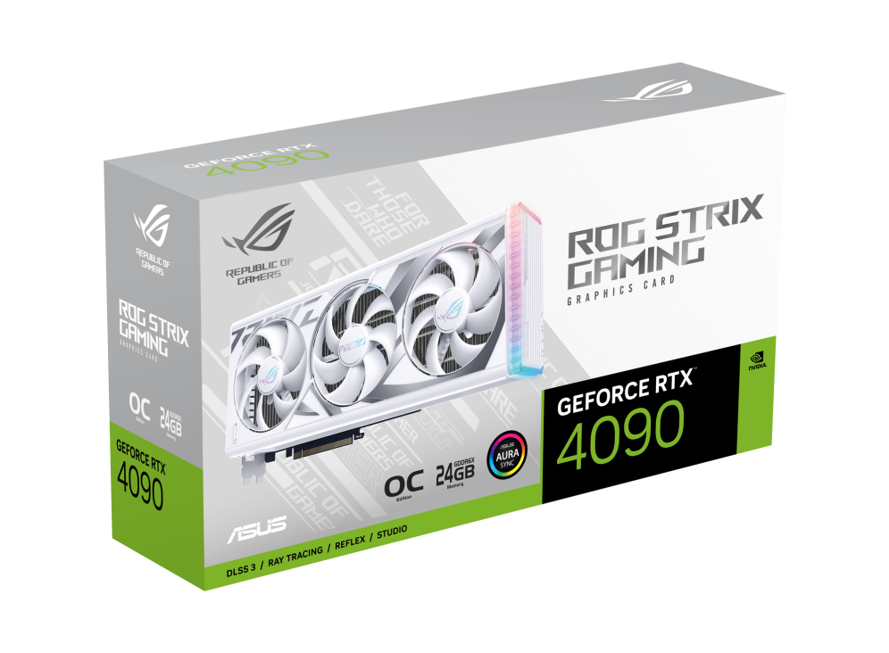

GRAZIE ALL'INCREDIBILE COMBINAZIONE DELLE SUE COMPONENTI
La ROG Strix GeForce RTX® 4090 dà un significato completamente nuovo al concetto di "seguire la corrente". All'interno e all'esterno, ogni elemento della scheda offre alla mostruosa GPU lo spazio per respirare liberamente e raggiungere le massime prestazioni. È arrivato il regno scatenato dell'architettura NVIDIA Ada Lovelace.
.png)
Auto-Extreme Technology
Auto-Extreme è un processo di produzione automatizzato che stabilisce nuovi standard nel settore consentendo a tutte le saldature di essere completate in un'unica passaggio. Ciò riduce lo sforzo termico sui componenti ed evita l'uso di prodotti chimici di pulizia aggressivi, con un conseguente impatto ambientale inferiore, un minore consumo energetico di produzione e un prodotto più affidabile nel complesso.
.png)
Sinfonia di luce
Gli elementi di illuminazione ARGB compatibili con Aura sul coperchio e sul perimetro destro della scheda offrono infinite possibilità di personalizzazione con effetti cromatici o funzionali. Abbinate una vasta gamma di componenti di sistema compatibili e coordinate il bagliore per creare una struttura che sia unica per voi.
.png)